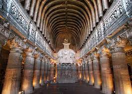

A World Heritage Site is a landmark or area with legal protection by an international convention administered by the United Nations Educational, Scientific and Cultural Organization (UNESCO). World Heritage Sites are designated by UNESCO for having cultural, historical, scientific or other form of significance. The sites are judged to contain "cultural and natural heritage around the world considered to be of outstanding value to humanity".The United Nations Educational, Scientific and Cultural Organization (UNESCO) World Heritage Sites are the important places of cultural or natural heritage as described in the UNESCO World Heritage Convention, established in 1945. India accepted the convention on 14 November 1977, making its sites eligible for inclusion on the list.
The first sites to be inscripted were Ajanta Caves, Ellora Caves, Agra Fort, and Taj Mahal, of which all were inscribed in the 1983 session of the World Heritage Committee. The latest site to be inscribed is Dholavira, Gujarat in 2021. As of July 2021, 19 of the 36 States and union territories of India are home to the World Heritage Sites, with Maharashtra having highest number of sites.
At present, there are 40 World Heritage Sites located in India. Out of these, 32 are cultural, 7 are natural, and 1 is mixed (meeting both cultural and natural criteria as determined by the organization's selection criteria. India has the sixth largest number of sites in the world.
Heritage Sites

Ajanta Caves
The Ajanta Caves are approximately 30 rock-cut Buddhist cave monuments dating from the 2nd century BCE to about 480 CE in the Aurangabad district of Maharashtra state in India. The caves include paintings and rock-cut sculptures described as among the finest surviving examples of ancient Indian art, particularly expressive paintings that present emotions through gesture, pose and form. They are universally regarded as masterpieces of Buddhist religious art. The caves were built in two phases, the first starting around the 2nd century BCE and the second occurring from 400 to 650 CE, according to older accounts, or in a brief period of 460–480 CE according to later scholarship. The site is a protected monument in the care of the Archaeological Survey of India, and since 1983, the Ajanta Caves have been a UNESCO World Heritage Site.
Ellora is a UNESCO World Heritage Site located in the Aurangabad district of Maharashtra, India. It is one of the largest rock-cut Hindu temple cave complexes in the world, featuring Buddhist and Jain monuments with artwork dating from the period 600–1000 CE. Cave 16 features the largest single monolithic rock excavation in the world, the Kailash temple, a chariot-shaped monument dedicated to Lord Shiva. The Kailash temple excavation also features sculptures depicting the gods, goddesses found in Hinduism as well as relief panels summarizing the two major Hindu Epics. There are over 100 caves at the site, all excavated from the basalt cliffs in the Charanandri Hills, 34 of which are open to public. These consist of 17 Hindu (caves 13–29), 12 Buddhist (caves 1–12) and 5 Jain (caves 30–34) caves, each group representing deities and mythologies prevalent in the 1st millennium CE, as well as monasteries of each respective religion. They were built close to one another and illustrate the religious harmony that existed in ancient India. All of the Ellora monuments were built during the Rashtrakuta dynasty, which constructed part of the Hindu and Buddhist caves, and the Yadava dynasty, which constructed a number of the Jain caves. Funding for the construction of the monuments was provided by royals, traders and the wealthy of the region.
Agra Fort is a historical fort in the city of Agra in India. It was the main residence of the emperors of the Mughal Dynasty until 1638, when the capital was shifted from Agra to Delhi. Before capture by the British, the last Indian rulers to have occupied it were the Marathas. In 1983, the Agra fort was life inscribed as a UNESCO World Heritage Site. It is about 2.5 km northwest of its more famous sister monument, the Taj Mahal. The fort can be more accurately described as the walled city. Like the rest of Agra, the history of Agra Fort prior to Mahmud Ghaznavi's invasion is unclear. However, in the 15th century, the Chauhan Rajputs occupied it. Soon after, Agra assumed the status of capital when Sikandar Lodi (A.D. 1487–1517) shifted his capital from Delhi and constructed a few buildings in the pre-existing Fort at Agra. After the first battle of Panipat (A.D. 1526) Mughals captured the fort and ruled from it. In A.D. 1530, Humayun was crowned in it. The Fort got its present appearance during the reign of Akbar (A.D. 1556–1605).
Konark Sun Temple is a 13th-century CE (year 1250) Sun temple at Konark about 35 kilometres (22 mi) northeast from Puri on the coastline of Odisha, India. The temple is attributed to king Narasimhadeva I of the Eastern Ganga dynasty about 1250 CE. Dedicated to the Hindu Sun God Surya, what remains of the temple complex has the appearance of a 100-foot (30 m) high chariot with immense wheels and horses, all carved from stone. Once over 200 feet (61 m) high, much of the temple is now in ruins, in particular the large shikara tower over the sanctuary; at one time this rose much higher than the mandapa that remains. The structures and elements that have survived are famed for their intricate artwork, iconography, and themes, including erotic kama and mithuna scenes. Also called the Surya Devalaya, it is a classic illustration of the Odisha style of Architecture or Kalinga
The Group of Monuments at Mahabalipuram is a collection of 7th- and 8th-century CE religious monuments in the coastal resort town of Mahabalipuram, Tamil Nadu, India and a UNESCO World Heritage Site. It is on the Coromandel Coast of the Bay of Bengal, about 60 kilometres (37 mi) south of Chennai. The site has 40 ancient monuments and Hindu temples, including one of the largest open-air rock reliefs in the world: the Descent of the Ganges or Arjuna's Penance. The group contains several categories of monuments: ratha temples with monolithic processional chariots, built between 630 and 668; mandapa viharas (cave temples) with narratives from the Mahabharata and Shaivic, Shakti and Vaishna inscriptions in a number of Indian languages and scripts; rock reliefs (particularly bas-reliefs); stone-cut temples built between 695 and 722, and archaeological excavations dated to the 6th century and earlier. The monuments were built during the Pallava dynasty. Known as the Seven Pagodas in many colonial-era publications, they are also called the Mamallapuram temples or Mahabalipuram temples in contemporary literature. The site, restored after 1960, has been managed by the Archaeological Survey of India.
To know more about The Group Of Monuments at Mahabalipuram- Click here
Kaziranga National Park
Kaziranga National Park is a national park in the Golaghat, Karbi Anglong and Nagaon districts of the state of Assam, India. The sanctuary, which hosts two-thirds of the world's great one-horned rhinoceroses, is a World Heritage Site. According to the census held in March 2018 which was jointly conducted by the Forest Department of the Government of Assam and some recognized wildlife NGOs, the rhino population in Kaziranga National Park is 2,413. It comprises 1,641 adult rhinos (642 males, 793 females, 206 unsexed); 387 sub-adults (116 males, 149 females, 122 unsexed); and 385 calves. In 2015, the rhino population stood at 2401. Kaziranga is home to the highest density of tigers among protected areas in the world, and was declared a Tiger Reserve in 2006 (now the highest tiger density is in Orang National Park, Assam). The park is home to large breeding populations of elephants, wild water buffalo, and swamp deer. Kaziranga is recognized as an Important Bird Area by BirdLife International for conservation of avifaunal species. When compared with other protected areas in India, Kaziranga has achieved notable success in wildlife conservation. Located on the edge of the Eastern Himalaya biodiversity hotspot, the park combines high species diversity and visibility. Kaziranga is a vast expanse of tall elephant grass, marshland, and dense tropical moist broadleaf forests, criss-crossed by four major rivers, including the Brahmaputra, and the park includes numerous small bodies of water. Kaziranga has been the theme of several books, songs, and documentaries. The park celebrated its centennial in 2005 after its establishment in 1905 as a reserve forest.
To know more about Kaziranga National Park- Click here
Manas Wildlife Sanctuary
Manas National Park is a national park, UNESCO Natural World Heritage Site, a Project Tiger reserve, an elephant reserve and a biosphere reserve in Assam, India. Located in the Himalayan foothills, it is contiguous with the Royal Manas National Park in Bhutan. The park is known for its rare and endangered endemic wildlife such as the Assam roofed turtle, hispid hare, golden langur and pygmy hog. Manas is famous for its population of the wild water buffalo. It also covers an area of 50,000 hectares (The sanctuary is the habitat of several species of plants, 21 most-threatened species of mammals (out of 55 mammal species in the sanctuary), 36 reptile species, three amphibians and 350 species of birds. Endangered species include: the tiger, pygmy hog, clouded leopard, sloth bear, Indian rhinoceros, wild buffaloes (the only pure strain of buffalo in India), Indian elephants, golden langur and Bengal florican.
To know more about Manas Wildlife Sanctuary- Click here
Churches and Convents of Goa
Churches and Convents of Goa is the name given by UNESCO to a set of religious monuments located in Goa Velha (or Old Goa), in the state of Goa, India, which were declared a World Heritage Site in 1986. Goa was the capital of Portuguese India and Asia and an evangelization center from the sixteenth century. The justifications for the inclusion of religious monuments in Goa in the World Heritage List are: 1) the influence of the monuments in the dissemination of Western art forms – the Manueline styles, Mannerist and Baroque – throughout Asia where Catholic missions were established; 2) the value of the set of monuments of Goa as an exceptional example that illustrates the work of evangelization and 3) the specific value of presence in the Basilica of Bom Jesus of the tomb of Francisco Xavier, which illustrates a major world event: the influence of the Catholic religion in Asia in the modern era.
To know more about Churches and Convets of Goa- Click here
Hampi
Hampi or Hampe, also referred to as the Group of Monuments at Hampi, is a UNESCO World Heritage Site located in east-central Karnataka, India. Hampi was the capital of the Vijayanagara Empire in the 14th century. Chronicles left by Persian and European travellers, particularly the Portuguese, say that Hampi was a prosperous, wealthy and grand city near the Tungabhadra River, with numerous temples, farms and trading markets. By 1500 CE, Hampi-Vijayanagara was the world's second-largest medieval-era city after Beijing, and probably India's richest at that time, attracting traders from Persia and Portugal. The Vijayanagara Empire was defeated by a coalition of Muslim sultanates; its capital was conquered, pillaged and destroyed by sultanate armies in 1565, after which Hampi remained in ruins. Located in Karnataka near the modern-era city of Hosapete, Hampi's ruins are spread over 4,100 hectares (16 sq mi) and it has been described by UNESCO as an "austere, grandiose site" of more than 1,600 surviving remains of the last great Hindu kingdom in South India that includes "forts, riverside features, royal and sacred complexes, temples, shrines, pillared halls, mandapas, memorial structures, water structures and others".